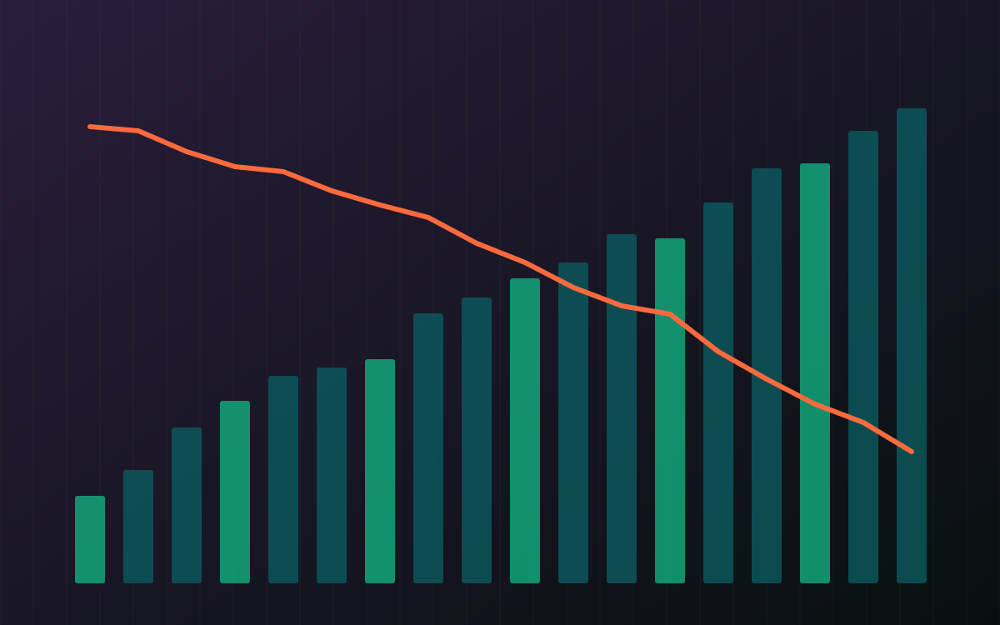

The Signal · Issue 04 · AI in Finance
The AI build-out meets its credit analysts
In one week the anchor of a $63 billion chip-financing deal reportedly lowered its expected rating for Anthropic to junk, OpenAI cut its fundraising target by a third, and chip stocks fell hard. For lenders, AI is now a credit question.

Facts are attributed and linked to their sources. The analysis and opinions are the author's own.
What it is
On 30 October TechCrunch, citing the Financial Times, reported that Blackstone, the anchor investor in a recent $63 billion deal to finance Anthropic's chips, told investors it now expects Anthropic to receive a "high" junk rating, in the double-B range, after its IPO. Blackstone had earlier said the company would reach investment grade before 2027. Anthropic and Blackstone both declined to comment.
A day later CNBC confirmed that OpenAI is now seeking up to $20 billion in its current round, down from about $30 billion, and the FT reported a post-money valuation of $1.25 trillion. The round is still open, UAE investors and Coatue are leading it, and some investors reduced their allocations. AI-linked stocks fell on Friday: Intel 25% on weak revenue guidance, Micron 5.5% and Nvidia 4%. Alphabet had its worst trading day ever on Thursday after search revenue missed expectations, and Microsoft, Alphabet and Amazon all gave capex figures or forecasts below analysts' estimates the week before.
Why it matters
For two years the finance story in AI has been about using models. This week it was about lending to the companies that build them. A double-B rating is the top of speculative grade. It means the debt is priced as if the borrower could fail. That is a normal place for a fast-growing company with large commitments, as the S-1 investigation in Issue 02 showed, but it is not where the market expected an AI lab to sit.
Banks show up on both sides. Some lend into the build-out through data-centre, chip and power financing. Many more buy model services and are building fraud checks, contact centres and code pipelines on one or two providers. The second exposure gets less attention.
Vendor risk for AI used to mean model risk. Now it also means credit risk.
If a critical process depends on one lab's API, that lab's financial health belongs in the same third-party risk file as any critical supplier, with an exit plan, data portability and a second model tested on the same work. This is one week, a forecast and a round that has not closed, so it should not be over-read. Blackstone's view is a prediction, not a rating. But the scrutiny of returns on AI spending that CNBC describes is the kind of shift risk teams should note.
What I'd watch
- The actual agency ratings when Anthropic's listing goes ahead.
- The final size and terms of OpenAI's round.
- Whether bank risk teams start listing AI labs as critical third parties, with exit plans to match.
Sources
- Anthropic expected to receive high 'junk' rating from credit agencies following IPO, FT report says TechCrunch, 30 Oct 2026.
- OpenAI pares fundraising goal, now seeking up to $20 billion in latest round CNBC, 31 Oct 2026.